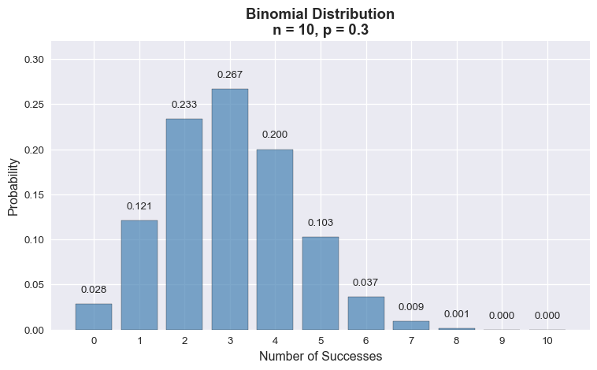
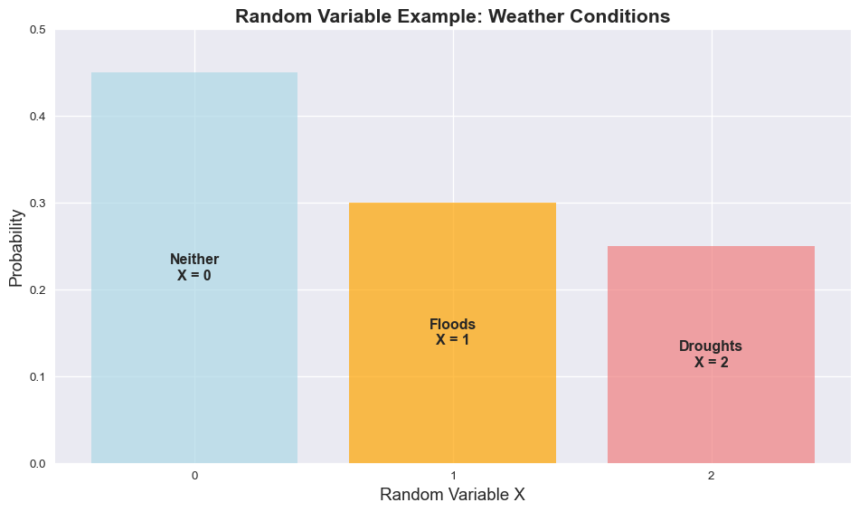
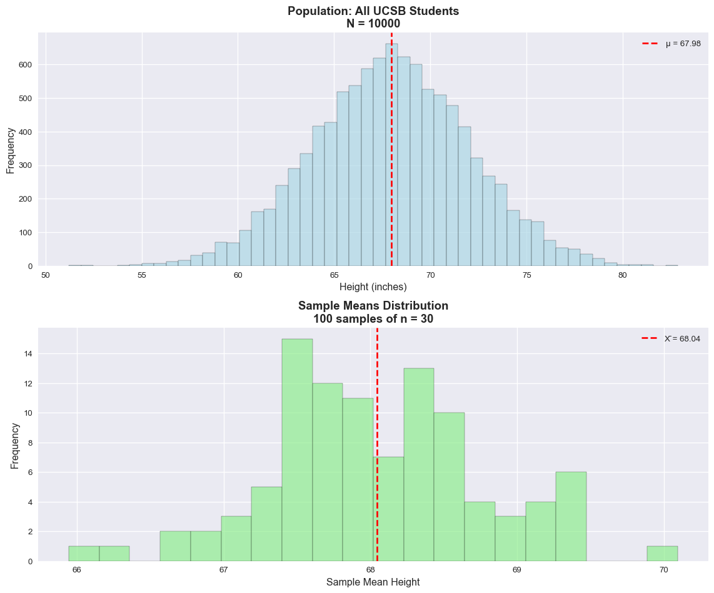
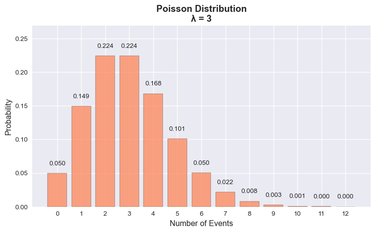
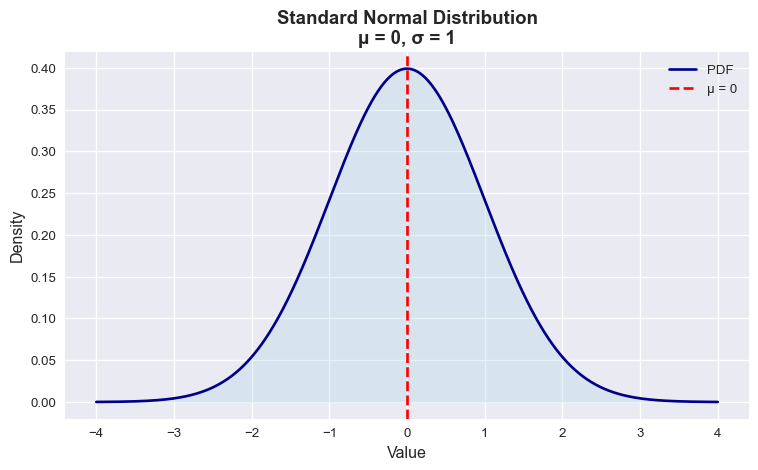
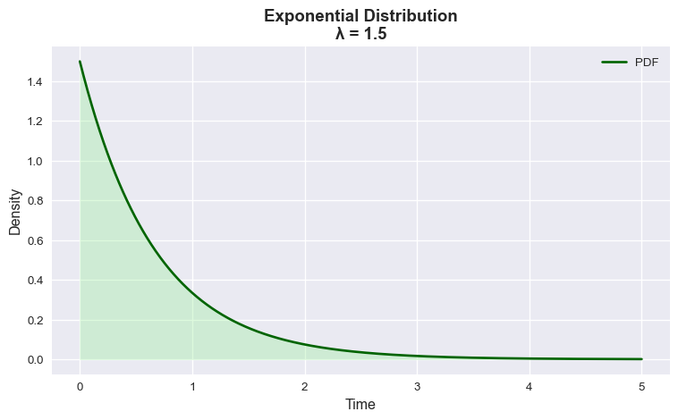
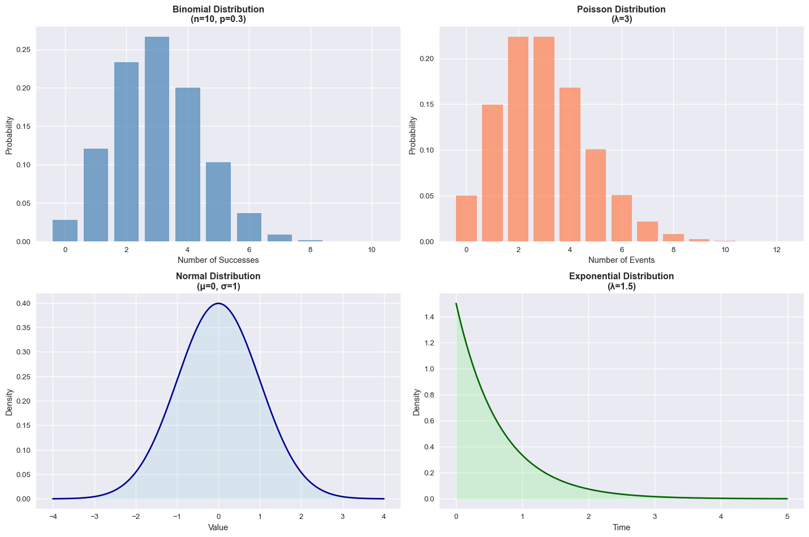
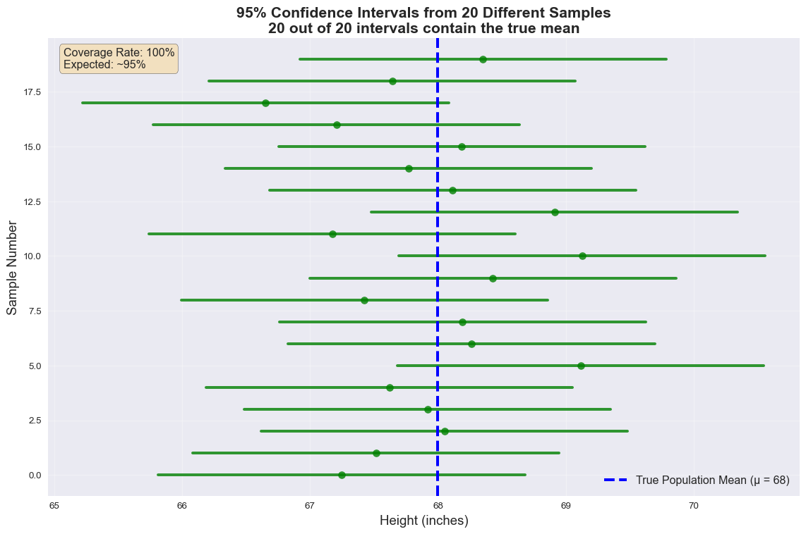
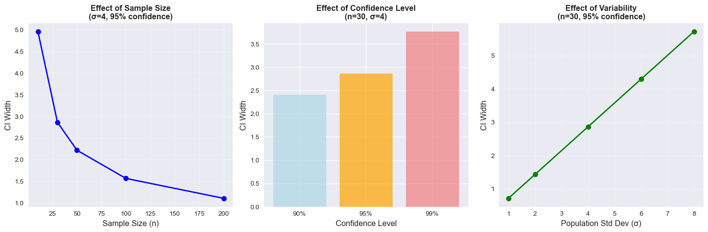

From Random Variables to Sampling & Confidence Intervals
Review of Concepts, Applications & Confidence Intervals Intro
Narjes Mathlouthi
Today’s Learning Objectives
By the end of this session, you will be able to:
- Define what a random variable is
- Distinguish between different types of random variables
- Identify examples of random variables in your field of study
- Connect probability concepts to real-world applications
What is a Random Variable?
- A random variable (r.v.) is a function that assigns numerical values to the outcomes of a random experiment
- Notation: Usually denoted by capital letters (X, Y, Z)
- It’s a bridge between the sample space and real numbers
- Think of it as a “rule” that translates outcomes into numbers
Key Point: It’s not actually “random”, it’s a deterministic function applied to random outcomes!
Real-World Connection
Activity: Your Research Field
Think About Your Major/Research Area
Take 2 minutes to brainstorm:
- What random phenomena occur in your field?
- How might you assign numbers to these outcomes?
- What questions could you answer with this data?
Examples by Field
Psychology: Reaction times, survey responses
Biology: Species counts, gene expression levels
Economics: Stock prices, unemployment rates
Engineering: System failures, signal strength
Types of Random Variables
Discrete Random Variables
- Definition: Takes on countable values (finite or countably infinite)
- Examples:
- Number of emails received per day
- Number of defective products in a batch
- Student enrollment in courses
- Number of research papers published per year
Note: If X is discrete, then X can take values \(x_1, x_2, x_3, \cdot\) where we can list all possible values.
Continuous Random Variables
- Definition: Takes on uncountably infinite values (any value in an interval)
- Examples:
- Height of students
- Time until equipment failure
- Temperature measurements
- GPA (technically discrete, but often treated as continuous)
Note: If \(X\) is continuous, then \(X\) can take any value in an interval \([a,b]\) or \((-\infty, \infty)\).
Sampling and Random Variables
Central Limit Theorem Connection
- When we repeatedly sample from a population, the sample mean becomes a random variable
- Formula: \(\bar{X} = \frac{1}{n}\sum_{i=1}^{n} X_i\)
- Each time we sample, we get a different \(\bar{X}\)
- The distribution of \(\bar{X}\) has special properties!
Central Limit Theorem Connection
These properties are :
- Center (Unbiased): \(E[\bar{X}] = \mu\).
- Spread Shrinks with \(n\): \(\mathrm{Var}(\bar{X}) = \sigma^2/n\); \(\mathrm{SE}(\bar{X}) = \sigma/\sqrt{n}\) (estimate with \(s/\sqrt{n}\)).
- Shape:
- If the population is Normal, then \(\bar{X} \sim \text{Normal}(\mu, \sigma^2/n)\) exactly.
- Otherwise, CLT: for large \(n\), \(\bar{X}\) is approximately Normal even when the data aren’t.
- If the population is Normal, then \(\bar{X} \sim \text{Normal}(\mu, \sigma^2/n)\) exactly.
- Consistency / Law of Large Numbers: \(\bar{X} \xrightarrow{P} \mu\) as \(n \to \infty\) (estimates get closer to the truth with more data).
- (If sampling w/out replacement, pop size \(N\)): Apply finite population correction (FPC):
\(\mathrm{SE}(\bar{X}) = \dfrac{\sigma}{\sqrt{n}}\sqrt{\dfrac{N-n}{N-1}}\).
Common Discrete Distributions
Binomial Distribution - Characteristics
Fixed number of trials (n)
Each trial has two outcomes
Constant probability of success
Trials are independent
Example: Number of successful research grants out of 10 applications
Poisson Distribution - Characteristics
Models rare events
Events occur independently
Constant average rate
Useful for counts over time/space
Example: Number of emails received per hour, number of mutations in DNA sequences

Common Continuous Distributions
Normal Distribution - Characteristics
Bell-shaped curve
Symmetric around mean
Parameters: \(\mu\) (mean), \(\sigma\) (standard deviation)
Many natural phenomena follow this pattern
Example: Heights, test scores, measurement errors

Exponential Distribution - Characteristics
Models waiting times
Memoryless property
Parameter: \(\lambda\) (rate)
Right-skewed
Example: Time between arrivals, equipment lifespan, time to next earthquake

Interactive Activity: Choose Your Distribution
Group Discussion (5 minutes)
For each scenario, identify: 1. Is the random variable discrete or continuous? 2. What distribution might it follow? 3. What are the parameters?
Scenarios: - Number of students attending office hours per week - Time spent studying for an exam - Number of typos in a research paper - Body temperature of patients in a hospital
Application: Research Design
Consider your research question:
- Identify your random variable(s)
- What are you measuring?
- What values can it take?
- Choose appropriate distribution
- Based on the nature of your data
- Consider the underlying process
- Plan your analysis
- How will you collect data?
- What statistical tests are appropriate?
Probability Mass vs. Density Functions
Discrete: Probability Mass Function (PMF)
\(P(X = x)\) for specific values
Sums to 1 over all possible values
Can find exact probabilities
Example: \(P(X = 3) = 0.2\)
Continuous: Probability Density Function (PDF)
\(f(x)\) represents density
Area under curve = 1
\(P(X = x) = 0\) for any specific value
Find probabilities over intervals
Example: \(P(a < X < b) = \int_{a}^{b} f(x)dx\)
Comparing Distributions Side-by-Side
Confidence Intervals for Means
- Problem: We have one sample mean, but want to estimate the population mean
- Solution: Use the sampling distribution to create a confidence interval
- Key Insight: If we know how \(\bar{X}\) varies, we can make probabilistic statements about μ
95% Confidence Interval Formula: \(\bar{x} \pm 1.96 \times \frac{\sigma}{\sqrt{n}}\)
Interpretation: “We are 95% confident that the true population mean lies within this interval”
Visualizing Confidence Intervals
Confidence Interval Interpretation
Common Misconceptions
❌ WRONG: “There’s a 95% probability that μ is in this specific interval”
✅ CORRECT: “If we repeated this process many times, 95% of the intervals we construct would contain the true μ”
Note
- The interval is random, not the population parameter
- Before collecting data: 95% chance our method will work
- After collecting data: The interval either contains μ or it doesn’t
- Confidence level = Long-run success rate of the method
Factors Affecting Confidence Interval Width
Key Takeaways
- Random variables translate random outcomes into numbers
- Discrete variables have countable values; continuous variables have uncountable values
- Distributions describe the probability patterns of random variables
- Choosing the right distribution depends on understanding your data’s nature
- Real applications exist in every field - think about your research!
Next Steps
For Your Research/Interests
- Identify random variables in your field
- Think about appropriate distributions
- Consider data collection methods
- Plan statistical analyses
- Connect theory to practice
Questions and Discussion
Share with the class:
What random variables are important in your field of study/major?
Which distributions might be most relevant?
What challenges do you anticipate in data collection?
Thank you for your participation!
Appendix: Python Code Examples
import numpy as np
import matplotlib.pyplot as plt
from scipy import stats
import seaborn as sns
# Generate random samples from different distributions
# Binomial
binom_data = np.random.binomial(n=10, p=0.3, size=100)
# Poisson
poisson_data = np.random.poisson(lam=3, size=100)
# Normal
normal_data = np.random.normal(loc=0, scale=1, size=100)
# Exponential
exp_data = np.random.exponential(scale=1/1.5, size=100)
# Create histograms
fig, axes = plt.subplots(2, 2, figsize=(12, 8))
axes[0,0].hist(binom_data, bins=11, alpha=0.7, color='steelblue')
axes[0,0].set_title('Binomial Sample')
axes[0,1].hist(poisson_data, bins=15, alpha=0.7, color='coral')
axes[0,1].set_title('Poisson Sample')
axes[1,0].hist(normal_data, bins=20, alpha=0.7, color='lightblue')
axes[1,0].set_title('Normal Sample')
axes[1,1].hist(exp_data, bins=20, alpha=0.7, color='lightgreen')
axes[1,1].set_title('Exponential Sample')
plt.tight_layout()
plt.show()Additional Resources
# Useful Python libraries for statistics and probability
import numpy as np # Numerical computing
import scipy.stats as stats # Statistical functions
import matplotlib.pyplot as plt # Plotting
import seaborn as sns # Statistical visualization
import pandas as pd # Data manipulation
# Quick reference for common distributions:
# stats.binom.pmf(k, n, p) # Binomial PMF
# stats.poisson.pmf(k, lam) # Poisson PMF
# stats.norm.pdf(x, mu, sigma) # Normal PDF
# stats.expon.pdf(x, scale) # Exponential PDF
# Generate random samples:
# np.random.binomial(n, p, size)
# np.random.poisson(lam, size)
# np.random.normal(mu, sigma, size)
# np.random.exponential(scale, size)
Understanding Data – Random Variables © 2025 Narjes Mathlouthi